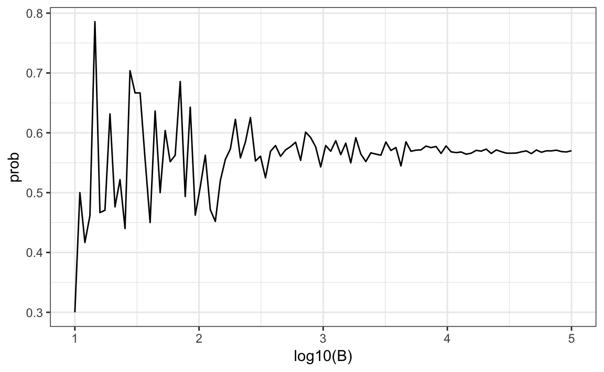
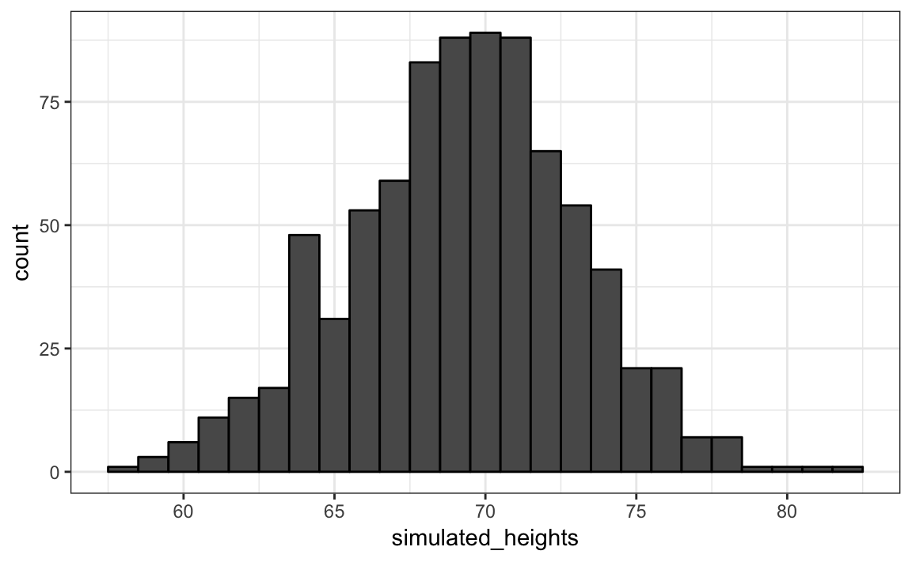
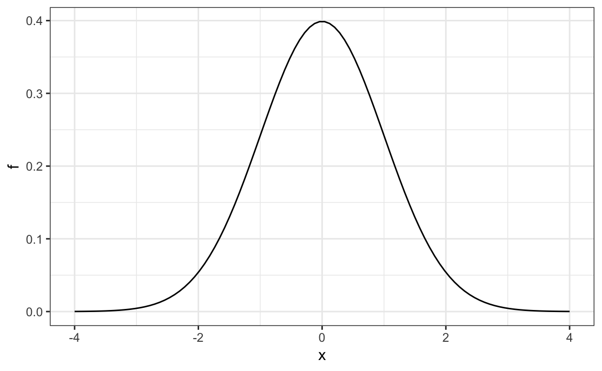
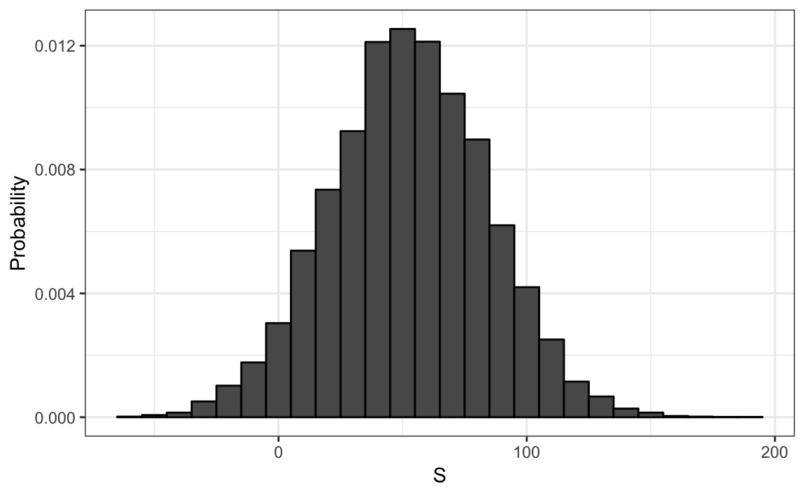
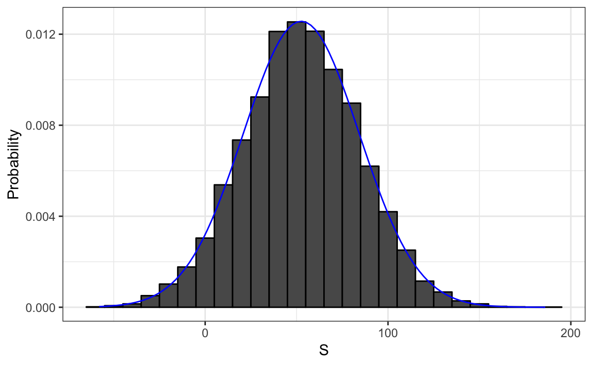

Chapter 24 Probability
Because knowing how to compute probabilities gives you an edge in games of chance, throughout history, many smart individuals, including famous mathematicians such as Cardano, Fermat and Pascal, spent time and energy thinking through the math of these games. As a result, Probability Theory was born. Probabilitycontinues to be highly useful in modern games of chance. For example, in poker, we can compute the probability of winning a hand based on the cards on the table. Also, casinos rely on probability theory to develop games that almost certainly guarantee a profit.
Probability theory is useful in many other contexts and, in particular, in areas that depend on data affected by chance in some way. Knowledge of probability is therefore indispensable for data science.
In games of chance, probability has a very intuitive definition. For instance, we know what it means that the chance of a pair of dice coming up seven is 1 in 6. However, this is not the case in other contexts. Today probability theory is being used much more broadly with the word probability commonly used in everyday language. Google’s auto-complete of “What are the chances of” give us: “having twins”, “rain today”, “getting struck by lightning”, and “getting cancer”.
One of the motivating examples for this chapter are the circumstances surrounding the financial crisis of 2007-2008. This financial crisis was in part caused by underestimating the risk of certain securities sold by financial institutions. Specifically, the risk of mortgage-backed securities (MBS) and collateralized debt obligations (CDO) were grossly underestimated. These MBS and CDO were sold at prices that assumed most homeowners would make their monthly payments, and the probability of this not occurring was calculated as being low. A combination of factors resulted in many more defaults than were expected, which led to a price crash of these securities. As a consequence, banks lost so much money that they needed government bailouts to avoid closing down completely.
To begin to comprehend this very complicated event, we need to understand the basics of probability. We will introduce important concepts such as random variables, independence, Monte Carlo simulations, expected values, standard errors, and the Central Limit Theorem. Before using probability concepts to understand our motivating example, we will use several examples related to games of chance since these are simple and illustrative.
24.1 Discrete probability
We start by covering some basic principles related to categorical data. The subset of probability is referred to as discrete probability. It will help us understand the probability theory we will later introduce for numeric and continuous data, which is much more common in data science applications. Discrete probability is more useful in card games and therefore we use these as examples.
24.1.1 Relative frequency
The word probability is used in everyday language. Answering questions about probability is often hard, if not impossible. Here we discuss a mathematical definition of probability that does permit us to give precise answers to certain questions.
For example, if I have 2 red beads and 3 blue beads inside an urn (most probability books use this archaic term, so we do too) and I pick one at random, what is the probability of picking a red one? Our intuition tells us that the answer is 2/5 or 40%. A precise definition can be given by noting that there are five possible outcomes of which two satisfy the condition necessary for the event “pick a red bead”. Since each of the five outcomes has the same chance of occurring, we conclude that the probability is .4 for red and .6 for blue.
A more tangible way to think about the probability of an event is as the proportion of times the event occurs when we repeat the experiment over and over, independently, and under the same conditions.
24.1.2 Notation
We use the notation \(\mbox{Pr}(A)\) to denote the probability of event \(A\) happening. We use the very general term event to refer to things that can happen when something occurs by chance. In our previous example, the event was “picking a red bead”. In a political poll in which we call 100 likely voters at random, an example of an event is “calling 48 Democrats and 52 Republicans”.
In data science applications, we will often deal with continuous variables. These events will often be things like “is this person taller than 6 feet”. In this case, we write events in a more mathematical form: \(X \geq 6\). We will see more of these examples later. Here we focus on categorical data.
24.1.3 Monte Carlo simulations
Computers provide a way to actually perform the simple random experiment described above: pick a bead at random from a bag that contains three blue beads and two red ones. Random number generators permit us to mimic the process of picking at random.
An example is the sample function in R. We demonstrate its use in the code below. First, we use the function rep to generate the urn:
beads <- rep(c("red", "blue"), times = c(2,3))
beads
#> [1] "red" "red" "blue" "blue" "blue"and then use sample to pick a bead at random:
sample(beads, 1)
#> [1] "blue"This line of code produces one random outcome. We want to repeat this experiment “over and over”, but it is impossible to repeat forever. Instead, we repeat the experiment a large enough number of times to make the results practically equivalent to repeating for ever. This is an example of a Monte Carlo simulation.
Much of what mathematical and theoretical statisticians study, which we do not cover in this book, relates to providing rigorous definitions of “practically equivalent” as well as studying how close a large number of experiments gets us to what happens in the limit. Later in this section, we provide a practical approach to deciding what is “large enough”.
To perform our first Monte Carlo simulation, we use the replicate function, which permits us to repeat the same task any number of times. Here, we repeat the random event \(B =\) 10,000 times:
B <- 10000
events <- replicate(B, sample(beads, 1))We can now see if our definition actually is in agreement with this Monte Carlo simulation approximation. We can use table to see the distribution:
tab <- table(events)
tab
#> events
#> blue red
#> 6101 3899and prop.table gives us the proportions:
prop.table(tab)
#> events
#> blue red
#> 0.61 0.39The numbers above are the estimated probabilities provided by this Monte Carlo simulation. Statistical theory, not covered here, tells us that \(B\) gets larger as the estimates get closer to 3/5=.6 and 2/5=.4.
Although this is a simple and not very useful example, we will use Monte Carlo simulations to estimate probabilities in cases in which it is harder to compute the exact ones. Before delving into more complex examples, we use simple ones to demonstrate the computing tools available in R.
24.1.4 Setting the random seed
Before we continue, we will briefly explain the following important line of code:
set.seed(1986) Throughout this book, we use random number generators. This implies that many of the results presented can actually change by chance, which then suggests that a frozen version of the book may show a different result than what you obtain when you try to code as shown in the book. This is actually fine since the results are random and change from time to time. However, if you want to to ensure that results are exactly the same every time you run them, you can set R’s random number generation seed to a specific number. Above we set it to 1986. We want to avoid using the same seed everytime. A popular way to pick the seed is the year - month - day. For exmaple, we picked 1986 on December 20, 2018: \(2018 - 12 - 20 = 1986\).
?set.seedIn the exercises, we may ask you to set the seed to assure that the results you obtain are exactly what we expect them to be.
With and without replacement
The function sample has an argument that permits us to pick more than one element from the urn. However, by default, this selection occurs without replacement: after a bead is selected, it is not put back in the bag. Notice what happens when we ask to randomly select five beads:
sample(beads, 5)
#> [1] "blue" "red" "red" "blue" "blue"
sample(beads, 5)
#> [1] "blue" "red" "blue" "red" "blue"
sample(beads, 5)
#> [1] "red" "blue" "blue" "blue" "red"This results in rearrangements that always have three blue and two red beads. If we ask that six beads be selected, we get an error:
sample(beads, 6)Error in sample.int(length(x), size, replace, prob) : cannot take a sample larger than the population when 'replace = FALSE'
However, the sample function can be used directly, without the use of replicate, to repeat the same experiment of picking 1 out of the 5 beads, continually, under the same conditions. To do this, we sample with replacement: return the bead back to the urn after selecting it. We can tell sample to do this changing the replace argument, which defaults to FALSE, to replace = TRUE:
events <- sample(beads, B, replace = TRUE)
prop.table(table(events))
#> events
#> blue red
#> 0.600 0.401Not surprisingly, we get results very similar to those previously obtained with replicate.
24.1.5 Discrete probability distributions
Defining a distribution for categorical outcomes is relatively straightforward. We simply assign a probability to each category. In cases that can be thought of as beads in an urn, for each bead type, their proportion defines the distribution.
If we are randomly calling likely voters from a population that is 44% Democrat, 44% Republican, 10% undecided and 2% Green Party, these proportions define the probability for each group. The probability distribution is:
$$ ()=0.44\
()=0.44\
()=0.10\
()=0.02 $$
24.1.6 Independence
We say two events are independent if the outcome of one does not affect the other. The classic example are coin tosses. Every time we toss a fair coin, the probability of seeing heads is 1/2 regardless of what previous tosses have revealed. The same is true when we pick beads from an urn with replacement. In the example above, the probability of red is 0.40 regardless of previous draws.
Many examples of events that are not independent come from card games. When we deal the first card, the probability of getting a King is 1/13 since there are thirteen possibilities: Ace, Deuce, Three, \(\dots\), Ten, Jack, Queen, King, and Ace. Now if we deal a King for the first card, and don’t replace it into the deck, the probabilities of a second card being a King is less because there are only three Kings left: the probability is 3 out of 51. These events are therefore not independent: the first outcome affected the next one.
To see an extreme case of non-independent events, consider our example of drawing five beads at random without replacement:
x <- sample(beads, 5)If you have to guess the color of the first bead, you will predict blue since blue has a 60% chance. But if I show you the result of the last four outcomes:
x[2:5]
#> [1] "blue" "blue" "blue" "red"would you still guess blue? Of course not. Now you know that the probability of red is 1 since the only beed left is red. The events are not independent so the probabilities change.
24.1.7 Conditional probabilities
When events are not independent, conditional probabilities are useful. We already saw an example of a conditional probability: we computed the probability that a second dealt card is a King given that the first was a King. In probability, we use the following notation:
\[ \mbox{Pr}(\mbox{Card 2 is a king} \mid \mbox{Card 1 is a king}) = 3/51 \]
We use the \(\mid\) as shorthand for “given that” or “conditional on”.
When two events, say \(A\) and \(B\), are independent, we have:
\[ \mbox{Pr}(A \mid B) = \mbox{Pr}(A) \]
This is the mathematical way of saying: the fact that \(B\) happened does not affect the probability of \(A\) happening. In fact, this can be considered the mathematical definition of independence.
24.1.8 Multiplication rule
If we want to know the probability of two events, say \(A\) and \(B\), occurring, we can use the multiplication rule:
\[ \mbox{Pr}(A \mbox{ and } B) = \mbox{Pr}(A)\mbox{Pr}(B \mid A) \] Let’s use Blackjack as an example. In Blackjack, you are assigned two random cards. After you see what you have, you can ask for more. The goal is to get closer to 21 than the dealer, without going over. Face cards are worth 10 points and Aces are worth 11 or 1 (you choose).
So, in a Blackjack game, to calculate the chances of getting a 21 by drawing an Ace and then a face card, we compute the probability of the first being an Ace and multiply by the probability of drawing a face card given that the first was an Ace: \(1/13 \times 12/52 \approx 0.02\)
The multiplicative rule also applies to more than two events. We can use induction to expand for more events:
\[ \mbox{Pr}(A \mbox{ and } B \mbox{ and } C) = \mbox{Pr}(A)\mbox{Pr}(B \mid A)\mbox{Pr}(C \mid A \mbox{ and } B) \]
24.1.9 Multiplication rule under indepedence
When we have independent events, then the multiplication rule becomes simpler:
\[ \mbox{Pr}(A \mbox{ and } B \mbox{ and } C) = \mbox{Pr}(A)\mbox{Pr}(B)\mbox{Pr}(C) \]
But we have to be very careful before using this since assuming independence can result in very different and incorrect probability calculations when we don’t actually have independence.
As an example, imagine a court case in which the suspect was described as having a mustache and a beard. The defendant has a mustache and a beard and the prosecution brings in an “expert” to testify that 1/10 men have beards and 1/5 have mustaches so using the multiplication rule we conclude that only \(1/10 \times 1/5\) or 0.02 have both.
But to multiply like this we need to assume independence! The conditional probability of a man having a mustache conditional on him having a beard is .95. So the correct calculation probability is much higher: \(1/10 \times 95/100 = 0.095\).
The multiplication rule also gives us a general formula for computing conditional probabilities:
\[ \mbox{Pr}(B \mid A) = \frac{\mbox{Pr}(A \mbox{ and } B)}{ \mbox{Pr}(A)} \]
To illustrate how we use these formulas and concepts in practice, we will use several examples related to card games.
24.1.10 Addition rule
The addition rule tells us that:
\[ \mbox{Pr}(A \mbox{ or } B) = \mbox{Pr}(A) + \mbox{Pr}(B) - \mbox{Pr}(A \mbox{ and } B) \]
This rule is intuitive: think of a Venn diagram. If we simply add the probabilities, we count the intersection twice so we need to substract one instance.

24.1.11 Combinations and permutations
In our very first example we imagined an urn with five beads. As a reminder, to compute the probability distribution of one draw, we simply listed out all the possibilities. There were 5 and so then, for each event, we counted how many of these possibilities were associated with the event. The resulting probability of choosing a blue bead is 3/5 because out of the five possible outcomes, three were blue.
For more complicated cases, the computations are not as straightforward. For instance, what is the probability that if I draw five cards without replacement, I get all cards of the same suit, what is known as a “flush” in Poker? In a Discrete Probability course you learn theory on how to make these computations. Here we focus on how to use R code to compute the answers.
First, let’s construct a deck of cards. For this, we will use the expand.grid and paste functions. We use paste to create strings by joining smaller strings. To do this, we take the number and suit of a card and create the card name like this:
number <- "Three"
suit <- "Hearts"
paste(number, suit)
#> [1] "Three Hearts"paste also works on pairs of vectors performing the operation element-wise:
paste(letters[1:5], as.character(1:5))
#> [1] "a 1" "b 2" "c 3" "d 4" "e 5"The function expand.grid gives us all the combinations of entries of two vectors. For example, if you have blue and black pants and white, grey and plaid shirts, all your combinations are:
expand.grid(pants = c("blue", "black"), shirt = c("white", "grey", "plaid"))
#> pants shirt
#> 1 blue white
#> 2 black white
#> 3 blue grey
#> 4 black grey
#> 5 blue plaid
#> 6 black plaidHere is how we generate a deck of cards:
suits <- c("Diamonds", "Clubs", "Hearts", "Spades")
numbers <- c("Ace", "Deuce", "Three", "Four", "Five",
"Six", "Seven", "Eight", "Nine", "Ten",
"Jack", "Queen", "King")
deck <- expand.grid(number=numbers, suit=suits)
deck <- paste(deck$number, deck$suit)With the deck constructed, we can now double check that the probability of a King in the first card is 1/13. We simply compute the proportion of possible outcomes that satisfy our condition:
kings <- paste("King", suits)
mean(deck %in% kings)
#> [1] 0.0769which is 1/13.
Now, how about the conditional probability of the second card being a King given that the first was a King? Earlier, we deduced that if one King is already out of the deck and there are 51 left, then this probability is 3/51. Let’s confirm by listing out all possible outcomes.
To do this, we can use the permutations function from the gtools package. For any list of size n, this function computes all the different combinations we can get when we select r items. Here are all the ways we can choose two numbers from a list consisting of 1,2,3:
library(gtools)
#>
#> Attaching package: 'gtools'
#> The following object is masked from 'package:futile.logger':
#>
#> scat
permutations(3, 2)
#> [,1] [,2]
#> [1,] 1 2
#> [2,] 1 3
#> [3,] 2 1
#> [4,] 2 3
#> [5,] 3 1
#> [6,] 3 2Notice that the order matters here: 3,1 is different than 1,3. Also, note that (1,1), (2,2) and (3,3) do not appear because once we pick a number, it can’t appear again.
Optionally, we can add a vector. If you want to see five random seven digit phone numbers out of all possible phone numbers, you can type:
all_phone_numbers <- permutations(10, 7, v = 0:9)
n <- nrow(all_phone_numbers)
index <- sample(n, 5)
all_phone_numbers[index,]
#> [,1] [,2] [,3] [,4] [,5] [,6] [,7]
#> [1,] 8 9 6 5 7 1 3
#> [2,] 9 4 0 2 1 8 6
#> [3,] 6 5 3 8 2 4 1
#> [4,] 6 2 5 9 7 1 4
#> [5,] 0 6 5 4 3 7 1Instead of using the numbers 1 through 10, the default, it uses what we provided through v: the digits 0 through 9.
To compute all possible ways we can choose two cards when the order matters, we type:
hands <- permutations(52, 2, v = deck)This is a matrix with two columns and 2652 rows. With a matrix we can get the first and second cards like this:
first_card <- hands[,1]
second_card <- hands[,2]Now the cases for which the first hand was a King can be computed like this:
kings <- paste("King", suits)
sum(first_card %in% kings)
#> [1] 204To get the conditional probability, we compute what fraction of these have a King in the second card:
sum(first_card %in% kings & second_card %in% kings) /
sum(first_card %in% kings)
#> [1] 0.0588which is exactly 3/51, as we had already deduced. Notice that the code above is equivalent to:
mean(first_card %in% kings & second_card %in% kings) /
mean(first_card %in% kings)
#> [1] 0.0588which uses mean instead of sum and is an R version of:
\[ \frac{\mbox{Pr}(A \mbox{ and } B)}{ \mbox{Pr}(A)} \]
How about if the order doesn’t matter? For example, in Blackjack if you get an Ace and a face card in the first draw, it is called a Natural 21 and you win automatically. If we wanted to compute the probability of this happening, we would enumerate the combinations, not the permutations, since the order does not matter. Below are the differences:
permutations(3,2)
#> [,1] [,2]
#> [1,] 1 2
#> [2,] 1 3
#> [3,] 2 1
#> [4,] 2 3
#> [5,] 3 1
#> [6,] 3 2
combinations(3,2)
#> [,1] [,2]
#> [1,] 1 2
#> [2,] 1 3
#> [3,] 2 3In the second line, the outcome does not include (2,1) because (1,2) already was enumerated. The same applies to (3,1) and (3,2).
So to compute the probability of a Natural 21 in Blackjack, we can do this:
aces <- paste("Ace", suits)
facecard <- c("King", "Queen", "Jack", "Ten")
facecard <- expand.grid(number = facecard, suit = suits)
facecard <- paste(facecard$number, facecard$suit)
hands <- combinations(52, 2, v = deck)
mean(hands[,1] %in% aces & hands[,2] %in% facecard)
#> [1] 0.0483In the last line, we assume the Ace comes first. This is only because we know the way combination generates enumerates possibilities and it will list this case first. But to be safe, we could have written this and produced the same answer:
mean((hands[,1] %in% aces & hands[,2] %in% facecard) |
(hands[,2] %in% aces & hands[,1] %in% facecard))
#> [1] 0.048324.1.12 Monte Carlo example
Instead of using combinations to deduce the exact probability of a Natural 21, we can use a Monte Carlo to estimate this probability. In this case, we draw two cards over and over and keep track of how many 21s we get. We can use the function sample to draw two cards without replacements:
hand <- sample(deck, 2)
hand
#> [1] "Jack Diamonds" "Ten Diamonds"And then check if one card is an Ace and the other a face card or a 10. Going forward, we include 10 when we say face card. Now we need to check both possibilities:
(hands[1] %in% aces & hands[2] %in% facecard) |
(hands[2] %in% aces & hands[1] %in% facecard)
#> [1] FALSEIf we repeat this 10,000 times, we get a very good approximation of the probability of a Natural 21.
Let’s start by writing a function that draws a hand and returns TRUE if we get a 21. The function does not need any arguments because it uses objects defined in the global environment.
blackjack <- function(){
hand <- sample(deck, 2)
(hand[1] %in% aces & hand[2] %in% facecard) |
(hand[2] %in% aces & hand[1] %in% facecard)
}Here we do have to check both possibilities: Ace first or Ace second because we are not using the combinations function. The function returns TRUE if we get a 21 and FALSE otherwise:
blackjack()
#> [1] FALSENow we can play this game, say, 10,000 times:
B <- 10000
results <- replicate(B, blackjack())
mean(results)
#> [1] 0.051924.1.13 Birthday problem example
Suppose you are in a classroom with 50 people. If we assume this is a randomly selected group of 50 people, what is the chance that at least two people have the same birthday? Although it is somewhat advanced, we can deduce this mathematically. We will do this later. Here we use a Monte Carlo simulation. For simplicity, we assume nobody was born on February 29. This actually doesn’t change the answer much.
First, note that birthdays can be represented as numbers between 1 and 365, so a sample of 50 birthdays can be obtained like this:
n <- 50
bdays <- sample(1:365, n, replace = TRUE)To check if in this particular set of 50 people we have at least two with the same birthday, we can use the function duplicated which returns TRUE whenever an element of a vector is a duplicate. Here is an example:
duplicated(c(1,2,3,1,4,3,5))
#> [1] FALSE FALSE FALSE TRUE FALSE TRUE FALSEThe second time 1 and 3 appear, we get a TRUE. So to check if two birthdays were the same, we simply use the any and duplicated functions like this:
any(duplicated(bdays))
#> [1] TRUEIn this case, we see that it did happen. At least two people had the same birthday.
To estimate the probability, we repeat this experiment by sampling sets of 50 birthdays over and over:
same_birthday <- function(n){
bdays <- sample(1:365, n, replace=TRUE)
any(duplicated(bdays))
}
B <- 10000
results <- replicate(B, same_birthday(50))
mean(results)
#> [1] 0.97Where you expecting the probability to be this high?
People tend to underestimate these probabilities. To get an intuition as to why it is so high, think about what happens when the group size is close to 365. At this stage, we run out of days and the probability is one.
Say we want to use this knowledge to bet with friends about two people having the same birthday in a group of people. When are the chances larger than 50%? Larger than 75%?
Let’s create a look-up table. We can quickly create a function to compute this for any group size:
compute_prob <- function(n, B=10000){
results <- replicate(B, same_birthday(n))
mean(results)
}Using the function sapply, we can perform element-wise operations on any function:
n <- seq(1,60)
prob <- sapply(n, compute_prob)We can now make a plot of the estimated probabilities of two people having the same birthday in a group of size \(n\):
library(tidyverse)
prob <- sapply(n, compute_prob)
qplot(n, prob)
Now let’s compute the exact probabilities rather than use Monte Carlo approximations. Not only do we get the exact answer using math, but the computations are much faster since we don’t have to generate experiments.
To make the math simpler, instead of computing the probability of it happening, we will compute the probability of it not happening. For this, we use the multiplication rule.
Let’s start with the first person. The probability that person 1 has a unique birthday is 1. The probability that person 2 has a unique birthday, given that person 1 already took one, is 364/365. Then, given that the first two people have unique birthdays, person 3 is left with 363 days to choose from. We continue this way and find the chances of all 50 people having a unique birthday is:
\[ 1 \times \frac{364}{365}\times\frac{363}{365} \dots \frac{365-n + 1}{365} \]
We can write a function that does this for any number:
exact_prob <- function(n){
prob_unique <- seq(365,365-n+1)/365
1 - prod( prob_unique)
}
eprob <- sapply(n, exact_prob)
qplot(n, prob) +
geom_line(aes(n, eprob), col = "red")
This plot shows that the Monte Carlo simulation provided a very good estimate of the exact probability. Had it not been possible to compute the exact probabilities, we would have still been able to accurately estimate the probabilities.
24.1.14 How many Monte Carlo experiments are enough
In the examples above, we used \(B=10,000\) Monte Carlo experiments. It turns out that this provided very accurate estimates. But in more complex calculations, 10,000 may not nearly enough. Also, for some calculations, 10,000 experiments might not be computationally feasible. In practice, we won’t know what the answer is so we won’t know if our Monte Carlo estimate is accurate. We know that the larger \(B\), the better the approximation. But how big do we need it to be? This is actually a challenging question and answering it often requires advanced theoretical statistics training.
One practical approach we will describe here is to check for the stability of the estimate. The following is an example with the birthday problem for a group of 22 people.
B <- 10^seq(1, 5, len = 100)
compute_prob <- function(B, n=25){
same_day <- replicate(B, same_birthday(n))
mean(same_day)
}
prob <- sapply(B, compute_prob)
qplot(log10(B), prob, geom = "line")
In this plot, we can see that the values start to stabilize; that is, they vary less than .01, around 1000. Note that the exact probability, which we know in this case, is 0.569.
24.1.15 Monty Hall problem example
In the 1970s, there was a game show called “Let’s Make a Deal” and Monty Hall was the host. At some point in the game, contestants were asked to pick one of three doors. Behind one door there was a prize. The other doors had a goat behind them to show the contestant they had lost. If the contestant did not pick the prize door on his or her first try, Monty Hall would open one of the two remaining doors and show the contestant there was no prize. Then he would ask “Do you want to switch doors?” What would you do?
We can use probability to show that if you stick with the original door choice, your chances of winning a prize remain 1 in 3. However, if you switch to the other door, your chances of winning double to 2 in 3! This seems counterintuitive. Many people incorrectly think both chances are 1 in 2 since you are choosing between 2 options. You can watch a detailed mathematical explanation of why this is here or read one here. Below we use a Monte Carlo simulation to see which strategy is better. Note that this code is written longer than it should be for pedagogical purposes.
Let’s start with the stick strategy:
B <- 10000
stick <- replicate(B, {
doors <- as.character(1:3)
prize <- sample(c("car", "goat", "goat"))
prize_door <- doors[prize == "car"]
my_pick <- sample(doors, 1)
show <- sample(doors[!doors %in% c(my_pick, prize_door)],1)
stick <- my_pick
stick == prize_door
})
mean(stick)
#> [1] 0.336As we write the code, we note that the lines starting with my_pick and show have no influence on the last logical operation since we stick to our original choice anyway. From this we should realize that the chance is 1 in 3, what we began with.
Now let’s repeat the exercise, but consider the switch strategy:
switch <- replicate(B, {
doors <- as.character(1:3)
prize <- sample(c("car", "goat", "goat"))
prize_door <- doors[prize == "car"]
my_pick <- sample(doors, 1)
show <- sample(doors[!doors %in% c(my_pick, prize_door)], 1)
stick <- my_pick
switch <- doors[!doors%in%c(my_pick, show)]
switch == prize_door
})
mean(switch)
#> [1] 0.672The Monte Carlo estimate confirms the 2/3 calculation. This helps us gain some insight by showing that we are removing a door, show, that is definitely not a winner from our choices. We also see that unless we get it right when we first pick, you win: 1 - 1/3 = 2/3.
24.1.16 Exercises
One ball will be drawn at random from a box containing: 3 cyan balls, 5 magenta balls, and 7 yellow balls. What is the probability that the ball will be cyan?
What is the probability that the ball will not be cyan?
Instead of taking just one draw, consider taking two draws. You take the second draw without returning the first draw to the box. We call this sampling without replacement. What is the probability that the first draw is cyan and that the second draw is not cyan?
Now repeat the experiment, but this time, after taking the first draw and recording the color, return it to the box and shake the box. We call this sampling with replacement. What is the probability that the first draw is cyan and that the second draw is not cyan?
Two events \(A\) and \(B\) are independent if \(\mbox{Pr}(A \mbox{ and } B) = \mbox{Pr}(A) P(B)\). Under which situation are the draws independent?
A. You don’t replace the draw.
B. You replace the draw.
C. Neither
D. Both
Say you’ve drawn 5 balls from the box, with replacement, and all have been yellow. What is the probability that the next one is yellow?
If you roll a 6-sided die six times, what is the probability of not seeing a 6?
Two teams, say the Celtics and the Cavs, are playing a seven game series. The Cavs are a better team and have a 60% chance of winning each game. What is the probability that the Celtics win at least one game?
Create a Monte Carlo simulation to confirm your answer to the previous problem. Use
B <- 10000simulations. Hint: Use the following code to generate the results of the first four games:celtic_wins <- sample(c(0,1), 4, replace = TRUE, prob = c(0.6, 0.4))The Celtics must win one of these 4 games.
Two teams, say the Cavs and the Warriors, are playing a seven game championship series. The first to win four games, therefore, wins the series. The teams are equally good so they each have a 50-50 chance of winning each game. If the Cavs lose the first game, what is the probability that they win the series?
Confirm the results of the previous question with a Monte Carlo simulation.
Two teams, \(A\) and \(B\), are playing a seven game series. Team \(A\) is better than team \(B\) and has a \(p>0.5\) chance of winning each game. Given a value \(p\), the probability of winning the series for the underdog team \(B\) can be computed with the following function based on a Monte Carlo simulation:
prob_win <- function(p){ B <- 10000 result <- replicate(B, { b_win <- sample(c(1,0), 7, replace = TRUE, prob = c(1-p, p)) sum(b_win)>=4 }) mean(result) }Use the function
sapplyto compute the probability, call itPr, of winning forp <- seq(0.5, 0.95, 0.025). Then plot the result.Repeat the exercise above, but now keep the probability fixed at
p <- 0.75and compute the probability for different series lengths: best of 1 game, 3 games, 5 games,… Specifically,N <- seq(1, 25, 2). Hint: use this function:prob_win <- function(N, p=0.75){ B <- 10000 result <- replicate(B, { b_win <- sample(c(1,0), N, replace = TRUE, prob = c(1-p, p)) sum(b_win)>=(N+1)/2 }) mean(result) }
24.2 Continuous probability
Earlier, we explained why when summarizing a list of numeric values, such as heights, it is not useful to construct a distribution that defines a proportion to each possible outcome. For example, if we measure every single person in a very large population of size \(n\) with extremely high precision, since no two people are exactly the same height, we need to assign the proportion \(1/n\) to each observed value and attain no useful summary at all. Similarly, when defining probability distributions, it is not useful to assign a very small probability to every single height.
Just as when using distributions to summarize numeric data, it is much more practical to define a function that operates on intervals rather than single values. The standard way of doing this is using the cumulative distribution function (CDF).
We previously described empirical cumulative distribution function (eCDF) as a basic summary of a list of numeric values. As an example, we earlier defined the height distribution for adult male students. Here, we define the vector \(x\) to contain these heights:
library(tidyverse)
library(dslabs)
data(heights)
x <- heights %>% filter(sex=="Male") %>% pull(height)We defined the empirical distribution function as:
F <- function(a) mean(x<=a)which, for any value a, gives the proportion of values in the list x that are smaller or equal than a.
Keep in mind that we have not yet introduced probability. Let’s do this by asking the following: if I pick one of the male students at random, what is the chance that he is taller than 70.5 inches? Because every student has the same chance of being picked, the answer to this is equivalent to the proportion of students that are taller than 70.5 inches. Using the CDF we obtain an answer by typing:
1 - F(70)
#> [1] 0.377Once a CDF is defined, we can use this to compute the probability of any subset. For instance, the probability of a student being between height a and height b is:
F(b)-F(a)Because we can compute the probability for any possible event this way, the cumulative probability function defines the probability distribution for picking a height at random from our vector of heights x.
24.2.1 Theoretical distribution
In the data visualization chapter, we introduced the normal distribution as a useful approximation to many naturally occurring distributions, including that of height. The cumulative distribution for the normal distribution is defined by a mathematical formula which in R can be obtained with the function pnorm. We say that a random quantity is normally distributed with average m and standard deviation s, if its probability distribution is defined by:
F(a) = rnorm(a, m, s)This is useful because if we are willing to use the normal approximation for, say, height, we don’t need the entire dataset to answer questions such as: what is the probability that a randomly selected student is taller then 70 inches? We just need the average height and standard deviation:
m <- mean(x)
s <- sd(x)
1 - pnorm(70.5, m, s)
#> [1] 0.37124.2.2 Theoretical distributions as approximations
The normal distribution is derived mathematically: we do not need data to define it. For practicing data scientists, almost everything we do involves data. Data is always, technically speaking, discrete. For example, we could consider our height data categorical with each specific height a unique category. The probability distribution is defined by the proportion of students reporting each height. Here is a plot of that probability distribution:

While most students rounded up their heights to the nearest inch, others reported values with more precision. One student reported his height to be 69.6850393700787 which is 177 centimeters. The probability assigned to this height is 0.001 or 1 in 812. The probability for 70 inches is much higher 0.106, but does it really make sense to think of the probability of being exactly 70 inches as being the same as 69.6850393700787? Clearly it is much more useful for data analytic purposes to treat this outcome as a continuous numeric variable, keeping in mind that very few people, or perhaps none, are exactly 70 inches, and that the reason we get more values at 70 is because people round to the nearest inch.
With continuous distributions, the probability of a singular value is not even defined. For example, it does not make sense to ask what is the probability that a normally distributed value is 70. Instead, we define probabilities for intervals. We thus could ask what is the probability that someone is between 69.5 and 70.5.
In cases like height, in which the data is rounded, the normal approximation is particularly useful if we deal with intervals that include exactly one round number. For example, the normal distribution is useful for approximating the proportion of students reporting values in intervals like the following three:
mean(x <= 68.5) - mean(x <= 67.5)
#> [1] 0.115
mean(x <= 69.5) - mean(x <= 68.5)
#> [1] 0.119
mean(x <= 70.5) - mean(x <= 69.5)
#> [1] 0.122Note how close we get with the normal approximation:
pnorm(68.5, m, s) - pnorm(67.5, m, s)
#> [1] 0.103
pnorm(69.5, m, s) - pnorm(68.5, m, s)
#> [1] 0.11
pnorm(70.5, m, s) - pnorm(69.5, m, s)
#> [1] 0.108However, the approximation is not as useful for other intervals. For instance, notice how the approximation breaks down when we try to estimate:
mean(x <= 70.9) - mean(x<=70.1)
#> [1] 0.0222with
pnorm(70.9, m, s) - pnorm(70.1, m, s)
#> [1] 0.0836In general, we call this situation discretization. Although the true height distribution is continuous, the reported heights tend to be more common at discrete values, in this case, due to rounding. As long as we are aware of how to deal with this reality, the normal approximation can still be a very useful tool.
24.2.3 The probability density
For categorical distributions, we can define the probability of a category. For example, a roll of a die, let’s call it \(X\), can be 1,2,3,4,5 or 6. The probability of 4 is defined as:
\[ \mbox{Pr}(X=4) = 1/6 \]
The CFD can then easily be defined: \[ F(4) = \mbox{Pr}(X\leq 4) = \mbox{Pr}(X = 4) + \mbox{Pr}(X = 3) + \mbox{Pr}(X = 2) + \mbox{Pr}(X = 1) \]
Although for continuous distributions the probability of a single value \(\mbox{Pr}(X=x)\) is not defined, there is a theoretical definition that has a similar interpretation. The probability density at \(x\) is defined as the function \(f(a)\) such that:
\[ F(a) = \mbox{Pr}(X\leq a) = \int_{-\infty}^a f(x)\, dx \]
For those that know calculus, remember that the integral is related to a sum: it is the sum of bars with widths approximating 0. If you don’t know calculus, you can think of \(f(x)\) as a curve for which the area under that curve up to the value \(a\), gives you the probability \(\mbox{Pr}(X\leq a)\).
For example, to use the normal approximation to estimate the probability of someone being taller than 76 inches, we use:
1 - pnorm(76, m, s)
#> [1] 0.0321which mathematically is the grey area below:

The curve you see is the probability density for the normal distribution. In R, we get this using the function dnorm.
Although it may not be immediately obvious why knowing about probability densities is useful, understanding this concept will be essential to those wanting to fit models to data for which predefined functions are not available.
24.2.4 Monte Carlo simulations for continuous variables
R provides functions to generate normally distributed outcomes. Specifically, the rnorm function takes three arguments: size, average (defaults to 0), and standard deviation (defaults to 1) and produces random numbers. Here is an example of how we could generate data that looks like our reported heights:
n <- length(x)
m <- mean(x)
s <- sd(x)
simulated_heights <- rnorm(n, m, s)Not surprisingly, the distribution looks normal:

This is one of the most useful functions in R as it will permit us to generate data that mimics natural events and answers questions related to what could happen by chance by running Monte Carlo simulations.
If, for example, we pick 800 males at random, what is the distribution of the tallest person? How rare is a seven footer in a group of 800 males? The following Monte Carlo simulation helps us answer that question:
B <- 10000
tallest <- replicate(B, {
simulated_data <- rnorm(800, m, s)
max(simulated_data)
})Having a seven footer is quite rare:
mean(tallest >= 7*12)
#> [1] 0.0184Here is the resulting distribution:

Note that it does not look normal.
24.2.5 Other continuous distributions
The normal distribution is not the only useful theoretical distribution. Other continuous distributions that we may encounter are the student-t, chi-squared, exponential, gamma, beta, and beta-binomial. R provides functions to compute the density, the quantiles, the cumulative distribution functions and to generate Monte Carlo simulations. R uses a convention that lets us remember the names, namely using the letters d, q, p and r in front of a shorthand for the distribution. We have already seen the functions dnorm, pnorm and rnorm for the normal distribution. The functions qnorm gives us the quantiles. We can therefore draw a distribution like this:
x <- seq(-4, 4, length.out = 100)
data.frame(x, f = dnorm(x)) %>%
ggplot(aes(x, f)) +
geom_line()
For the student-t, the shorthand t is used so the functions are dt for the density, qt for the quantiles, pt for the cumulative distribution function, and rt for Monte Carlo simulation.
24.2.6 Exercises
Assume the distribution of female heights is approximated by a normal distribution with a mean of 64 inches and a standard deviation of 3 inches. If we pick a female at random, what is the probability that she is 5 feet or shorter?
Assume the distribution of female heights is approximated by a normal distribution with a mean of 64 inches and a standard deviation of 3 inches. If we pick a female at random, what is the probability that she is 6 feet or taller?
Assume the distribution of female heights is approximated by a normal distribution with a mean of 64 inches and a standard deviation of 3 inches. If we pick a female at random what is the probability that she is between 61 and 67 inches.
Repeat the exercise above, but convert everything to centimeters. That is, multiply every height, including the standard deviation, by 2.54. What is the answer now?
Notice that the answer to the question does not change when you change units. This makes sense since the answer to the question should not be affected by what units we use. In fact, if you look closely, you notice that 61 and 64 are both 1 SD away from the average. Compute the probability that a randomly picked, normally distributed random variable is within 1 SD from the average.
To see the math that explains why the answers to questions 3, 4, and 5 are the same, suppose we have a random variable with average \(m\) and standard error \(s\). Suppose we ask the probability of \(X\) being smaller or equal to \(a\). Remember that, by definition, \(a\) is \((a - m)/s\) standard deviations \(s\) away from the average \(m\). The probability is:
\[ \mbox{Pr}(X \leq a) \]
Now we subtract \(\mu\) to both sides and then divide both sides by \(\sigma\):
\[ \mbox{Pr}\left(\frac{X-m}{s} \leq \frac{a-m}{s} \right) \]
The quantity on the right is a standard normal random variable. It has an average of 0 and a standard error of 1. We will call it \(Z\):
\[ \mbox{Pr}\left(Z \leq \frac{a-m}{s} \right) \]
So, no matter the units, the probability of \(X\leq a\) is the same as the probability of a standard normal variable being less than \((a - m)/s\). If
muis the average andsigmathe standard error, which of the following R code would give us the right answer in every situation:A.
mean(X<=a)B.
pnorm((a - m)/s)C.
pnorm((a - m)/s, m, s)D.
pnorm(a)Imagine the distribution of male adults is approximately normal with an expected value of 69 and a standard deviation of 3. How tall is the male in the 99th percentile? Hint: use
qnorm.The distribution of IQ scores is approximately normally distributed. The average is 100 and the standard deviation is 15. Suppose you want to know the distribution of the highest IQ across all graduating classes if 10,000 people are born each in your school district. Run a Monte Carlo simulation with
B=1000generating 10,000 IQ scores and keeping the highest. Make a histogram.
24.3 Random variables
Random variables are numeric outcomes resulting from random processes. We can easily generate random variables using some of the simple examples we have shown. For example, define X to be 1, if a bead is blue and red otherwise.
beads <- rep( c("red", "blue"), times = c(2,3))
X <- ifelse(sample(beads, 1) == "blue", 1, 0)Here X is a random variable: every time we select a new bead the outcome changes randomly. See below:
ifelse(sample(beads, 1) == "blue", 1, 0)
#> [1] 0
ifelse(sample(beads, 1) == "blue", 1, 0)
#> [1] 1
ifelse(sample(beads, 1) == "blue", 1, 0)
#> [1] 1Sometimes it’s 1 and sometimes it’s 0.
In data science, we often deal with data that is affected by chance in some way: the data comes from a random sample, the data is affected by measurement error or the data measures some outcome that is random in nature. Being able to quantify the uncertainty introduced by randomness is one of the most important jobs of a data analysts. Statistical inference offers a framework, as well as several practical tools, for doing this. The first step is to learn how to mathematically describe random variables. We start with games of chance.
24.3.1 Sampling models
Many data generation procedures, those that produce the data we study, can be modeled quite well as draws from a urn. For instance, we can model the process of polling likely voters as drawing 0s (Republicans) and 1s (Democrats) from an urn containing the 0 and 1 code for all likely voters. In epidemiological studies, we often assume that the subjects in our study are a random sample from the population of interest. The data related to a specific outcome can be modeled as a random sample from an urn containing the outcome for the entire population of interest. Similarly, in experimental research, we often assume that the individual organisms we are studying, for example worms, flies, or mice, are a random sample from a larger population. Randomized experiments can also be modeled by draws from an urn given the way individuals are assigned into groups: when getting assigned, you draw your group at random. Sampling models are therefore ubiquitous in data science. Casino games offer a plethora of examples of real world situations in which sampling models are used to answer specific questions. We will therefore start with such examples.
Suppose a very small casino hires you to consult on whether they should set up roulette wheels. To keep the example simple, we will assume that 1,000 people will play and that the only game you can play on the roulette wheel is to bet on red or black. The casino wants you to predict how much money they will make or lose. They want a range of values and, in particular, they want to know what’s the chance of losing money. If this probability is too high, they will pass on installing roulette wheels.
We are going to define a random variable \(S\) that will represent the casino’s total winnings. Let’s start by constructing the urn. A roulette wheel has 18 red pockets, 18 black pockets and 2 green ones. So playing a color in one game of roulette is equivalent to drawing from this urn:
color <- rep(c("Black", "Red", "Green"), c(18, 18, 2))The 1,000 outcomes from 1,000 people playing are independent draws from this urn. If red comes up, the gambler wins and the casino loses a dollar, so we draw a -$1. Otherwise, the casino wins a dollar and we draw a $1. To construct our random variable \(S\), we can use this code:
n <- 1000
X <- sample(ifelse(color == "Red", -1, 1), n, replace = TRUE)
X[1:10]
#> [1] 1 -1 -1 -1 -1 1 1 1 -1 1Because we know the proportions of 1s and -1s, we can generate the draws with one line of code, without defining color:
X <- sample(c(-1,1), n, replace = TRUE, prob=c(9/19, 10/19))We call this a sampling model since we are modeling the random behavior of roulette with the sampling of draws from an urn. The total winnings \(S\) is simply the sum of these 1,000 independent draws:
X <- sample(c(-1,1), n, replace = TRUE, prob=c(9/19, 10/19))
S <- sum(X)
S
#> [1] 7824.3.2 The probability distribution of a random variable
If you run the code above, you see that \(S\) changes every time. This is, of course, because \(S\) is a random variable. The probability distribution of a random variable tells us the probability of the observed value falling at any given interval. So, for example, if we want to know the probability that we lose money, we are asking the probability that \(S\) is in the interval \(S<0\).
Note that if we can define a cumulative distribution function \(F(a) = \mbox{Pr}(S\leq a)\), then we will be able to answer any question related to the probability of events defined by our random variable \(S\), including the event \(S<0\). We call this \(F\) the random variable’s distribution function.
We can estimate the distribution function for the random variable \(S\) by using a Monte Carlo simulation to generate many realizations of the random variable. With this code, we run the experiment of having 1,000 people play roulette, over and over, specifically \(B = 10,000\) times:
n <- 1000
B <- 10000
roulette_winnings <- function(n){
X <- sample(c(-1,1), n, replace = TRUE, prob=c(9/19, 10/19))
sum(X)
}
S <- replicate(B, roulette_winnings(n))Now we can ask the following: in our simulations, how often did we get sums less than or equal to a?
mean(S <= a)This will be a very good approximation of \(F(a)\). In fact, we can visualize the distribution by creating a histogram showing the probability \(F(b)-F(a)\) for several intervals \((a,b]\):

Now we can easily answer the casino’s question: how likely is it that we will lose money?
mean(S<0)
#> [1] 0.0459We can see it is quite low.
In the histogram above, we see that the distribution appears to be approximately normal. A qq-plot will confirm that the normal approximation is close to perfect. If, in fact, the distribution is normal, then all we need to define the distribution is the average and the standard deviation. Because we have the original values from which the distribution is created, we can easily compute these:
mean(S)
#> [1] 52.5
sd(S)
#> [1] 31.8If we add a normal density with this average and standard deviation to the histogram above, we see that it matches very well:

This average and this standard deviation have special names. They are referred to as the expected value and standard error of the random variable \(S\). We will say more about these in the next section.
It turns out that statistical theory provides a way to derive the distribution of random variables defined as independent random draws from an urn. Specifically, in our example above, we can show that \((S+n)/2\) follows a binomial distribution. We therefore do not need to run for Monte Carlo simulations to know the probability distribution of \(S\). We did this for illustrative purposes.
We can use the function dbinom and pbinom to compute the probabilities exactly. For example, to compute \(\mbox{Pr}(S < 0)\) we note that:
\[\mbox{Pr}(S < 0) = \mbox{Pr}((S+n)/2 < (0+n)/2)\]
and we can use the pbinom to compute \[\mbox{Pr}(S \leq 0)\]
n <- 1000
pbinom(n/2, size = n, prob = 10/19)
#> [1] 0.0511Because this is a discrete probability function, to get \(\mbox{Pr}(S < 0)\) rather than \(\mbox{Pr}(S \leq 0)\), we write:
pbinom(n/2-1, size = n, prob = 10/19)
#> [1] 0.0448For the details of the binomial distribution, you can consult any basic probability book or even Wikipedia.
Here we do not cover these details. Instead, we will discuss an incredibly useful approximation provided by mathematical theory that applies generally to sums and averages of draws from any urn: the Central Limit Theorem (CLT).
24.3.3 Distributions versus probability distributions
Before we continue, let’s make an important distinction and connection between the distribution of a list of numbers and a probability distribution. In the visualization chapter, we described how any list of numbers \(x_1,\dots,x_n\) has a distribution. The definition is quite straightforward. We define \(F(a)\) as the function that tells us what proportion of the list is less than or equal to \(a\). Because they are useful summaries when the distribution is approximately normal, we define the average and standard deviation. These are defined with a straightforward operation of the vector containing the list of numbers x:
m <- sum(x)/length(x)
s <- sqrt(sum((x - m)^2) / length(x))A random variable \(X\) has a distribution function. To define this, we do not need a list of numbers. It is a theoretical concept. In this case, we define the distribution as the \(F(a)\) that answers the question: what is the probability that \(X\) is less than or equal to \(a\)? There is no list of numbers.
However, if \(X\) is defined by drawing from an urn with numbers in it, then there is a list: the list of numbers inside the urn. In this case, the distribution of that list is the probability distribution of \(X\) and the average and standard deviation of that list are the expected value and standard error of the random variable.
Another way to think about it that does not involve an urn is to run a Monte Carlo simulation and generate a very large list of outcomes of \(X\). These outcomes are a list of numbers. The distribution of this list will be a very good approximation of the probability distribution of \(X\). The longer the list, the better the approximation. The average and standard deviation of this list will approximate the expected value and standard error of the random variable.
24.3.4 Notation for random variables
In statistical textbooks, upper case letters are used to denote random variables and we follow this convention here. Lower case letters are used for observed values. You will see some notation that includes both. For example, you will see events defined as \(X \leq x\). Here \(X\) is a random variable, making it a random event, and \(x\) is an arbitrary value and not random. So, for example, \(X\) might represent the number on a die roll and \(x\) will represent an actual value we see 1, 2, 3, 4, 5 or 6. So in this case, the probability of \(X=x\) is 1/6 regardless of the observed value \(x\). This notation is a bit strange because, when we ask questions about probability, \(X\) is not an observed quantity. Instead, it’s a random quantity that we will see in the future. We can talk about what we expect it to be, what values are probable, but not what it is. But once we have data, we do see a realization of \(X\). So data scientists talk of what could have been after we see what actually happened.
24.3.5 Central Limit Theorem
The Central Limit Theorem (CLT) tells us that when the number of draws, also called the sample size, is large, the probability distribution of the sum of the independent draws is approximately normal. Because sampling models are used for so many data generation processes, the CLT is considered one of the most important mathematical insights in history.
Previously, we discussed that if we know that the distribution of a list of numbers is approximated by the normal distribution, all we need to describe the list are the average and standard deviation. We also know that the same applies to probability distributions. If a random variable has a probability distribution that is approximated with the normal distribution, then all we need to describe the probability distribution are the average and standard deviation, referred to as the expected value and standard error.
24.3.6 The expected value and standard error
We have described sampling models for draws. We will now go over the mathematical theory that lets us approximate the probability distributions for the sum of draws. Once we do this, we will be able to help the casino predict how much money they will make. The same approach we use for the sum of draws will be useful for describing the distribution of averages and proportion which we will need to understand how polls work.
The first important concept to learn is the expected value. In statistics books, it is common to use letter \(\mbox{E}\) like this:
\[\mbox{E}[X]\]
to denote the expected value of the random variable \(X\).
A random variable will vary around its expected value in a way that if you take the average of many, many draws, the average of the draws will approximate the expected value, getting closer and closer the more draws you take.
Theoretical statistics provides techniques that facilitate the calculation of expected values in different circumstances. For example, a useful formula tells us that the expected value of a random variable defined by one draw is the average of the numbers in the urn. In the urn used to model betting on red in roulette, we have 20 one dollars and 18 negative one dollars. The expected value is thus:
\[ \mbox{E}[X] = (20 + -18)/38 \]
which is about 5 cents. It is a bit counterintuitive to say that \(X\) varies around 0.05, when the only values it takes is 1 and -1. One way to make sense of the expected value in this context is by realizing that if we play the game over and over, the casino wins, on average, 5 cents per game. A Monte Carlo simulation confirms this:
B <- 10^6
x <- sample(c(-1,1), B, replace = TRUE, prob=c(9/19, 10/19))
mean(x)
#> [1] 0.0517In general, if the urn has two possible outcomes, say \(a\) and \(b\), with proportions \(p\) and \(1-p\) respectively, the average is:
\[ap + b(1-p).\]
To see this, notice that if there are \(n\) beads in the urn, then we have \(np\) \(a\)s and \(n(1-p)\) \(b\)s and because the average is the sum, \(n\times a \times p + n\times b \times (1-p)\), divided by the total \(n\), we get that the average is \(ap + b(1-p)\).
Now the reason we define the expected value is because this mathematical definition turns out to be useful for approximating the probability distributions of sum, which then is useful for describing the distribution of averages and proportions. The first useful fact is that the expected value of the sum of the draws is:
\[ \mbox{number of draws } \times \mbox{ average of the numbers in the urn} \]
So if 1,000 people play roulette, the casino expects to win, on average, about 1,000 \(\times\) $0.05 = $50. But this is an expected value. How different can one observation be from the expected value? The casino really needs to know this. What is the range of possibilities? If negative numbers are too likely, they will not install roulette wheels. Statistical theory once again answers this question. The standard error (SE) gives us an idea of the size of the variation around the expected value. In statistics books, it’s common to use:
\[\mbox{SE}[X]\]
to denote the standard error of a random variable.
If our draws are independent, then the standard error of the sum is given by the equation:
\[ \sqrt{\mbox{number of draws }} \times \mbox{ standard deviation of the numbers in the urn} \]
Using the definition of standard deviation, we can derive, with a bit of math, that if an urn contains two values \(a\) and \(b\) with proportions \(p\) and \((1-p)\) respectively, the standard deviation is:
\[\mid b - a \mid \sqrt{p(1-p)}.\]
So in our roulette example, the standard deviation of the values inside the urn is: \(\mid 1 - (-1) \mid \sqrt{10/19 \times 9/19}\) or:
2 * sqrt(90)/19
#> [1] 0.999The standard error tells us the typical difference between a random variable and its expectation. Since one draw is obviously the sum of just one draw, we can use the formula above to calculate that the random variable defined by one draw has an expected value of 0.05 and a standard error of about 1. This makes sense since we either get 1 or -1, with 1 slightly favored over -1.
Using the formula above, the sum of 1,000 people playing has standard error of about $32:
n <- 1000
sqrt(n) * 2 * sqrt(90)/19
#> [1] 31.6As a result, when 1,000 people bet on red, the casino is expected to win $50 with a standard error of $32. It therefore seems like a safe bet. But we still haven’t answered the question: how likely is it to lose money? Here the CLT will help.
Advanced note: Before continuing we should point out that exact probability calculations for the casino winnings can be performed with the binomial distribution. However, here we focus on the CLT which can be generally applied to sums of random variables in a way that the binomial distribution can’t.
24.3.7 Central Limit Theorem approximation
We previously ran this Monte Carlo simulation:
n <- 1000
B <- 10000
roulette_winnings <- function(n){
X <- sample(c(-1,1), n, replace = TRUE, prob=c(9/19, 10/19))
sum(X)
}
S <- replicate(B, roulette_winnings(n))The Central Limit Theorem (CLT) tells us that the sum \(S\) is approximated by a normal distribution. Using the formulas above, we know that the expected value and standard error are:
n * (20-18)/38
#> [1] 52.6
sqrt(n) * 2 * sqrt(90)/19
#> [1] 31.6The theoretical values above match those obtained with the Monte Carlo simulation:
mean(S)
#> [1] 52.5
sd(S)
#> [1] 31.8Using the CLT, we can skip the Monte Carlo simulation and instead compute the probability of the casino losing money using this approximation:
mu <- n * (20-18)/38
se <- sqrt(n) * 2 * sqrt(90)/19
pnorm(0, mu, se)
#> [1] 0.0478which is also in very good agreement with our Monte Carlo result:
mean(S < 0)
#> [1] 0.045924.3.8 Statistical properties of averages
There are serveal useful mathematical results that we used above and often employ when working with data. We list them below.
The expected value of the sum of random variables is the sum of each random variable’s expected value. We can write it like this:
\[ \mbox{E}[X_1+X_2+\dots+X_n] = \mbox{E}[X_1] + \mbox{E}[X_2]+\dots+\mbox{E}[X_n] \]
If the \(X\) are independent draws from the urn, then they all have the same expected value. Let’s call it \(\mu\) and thus:
\[ \mbox{E}[X_1+X_2+\dots+X_n]= n\mu \]
which is another way of writing the result we show above for the sum of draws.
The expected value of a non-random constant times a random variable is the non-random constant times the expected value of a random variable. This is easier to explain with symbols: \[ \mbox{E}[aX] = a\times\mbox{E}[X] \]
To see why this is intuitive, consider change of units. If we change the units of a random variable, say from dollars to cents, the expectation should change in the same way. A consequence of the above two facts is that the expected value of the average of independent draws from the same urn is the expected value of the urn, call it \(\mu\) again:
\[ \mbox{E}[(X_1+X_2+\dots+X_n) / n]= \mbox{E}[X_1+X_2+\dots+X_n] / n = n\mu/n = \mu \]
The square of the standard error of the sum of independent random variables is the sum of the square of the standard error of each random variable. This one is easier to understand in math form: \[ \mbox{SE}[X_1+X_2+\dots+X_n] = \sqrt{\mbox{SE}[X_1]^2 + \mbox{SE}[X_2]^2+\dots+\mbox{SE}[X_n]^2 } \]
The square of the standard error is referred to as the variance in statistical textbooks.
The standard error of a non-random constant times a random variable is the non-random constant times the random variable’s standard error. As with the expectation: \[ \mbox{SE}[aX] = a \times \mbox{SE}[X] \]
To see why this is intuitive, again think of units.
A consequence of 3 and 4 is that the standard error of the average of independent draws from the same urn is the standard deviation of the urn divided by the square root of \(n\) (the number of draws), call it \(\sigma\):
\[ \begin{aligned} \mbox{SE}[(X_1+X_2+\dots+X_n) / n] &= \mbox{SE}[X_1+X_2+\dots+X_n]/n \\ &= \sqrt{\mbox{SE}[X_1]^2+\mbox{SE}[X_2]^2+\dots+\mbox{SE}[X_n]^2}/n \\ &= \sqrt{\sigma^2+\sigma^2+\dots+\sigma^2}/n\\ &= \sqrt{n\sigma^2}/n\\ &= \sigma / \sqrt{n} \end{aligned} \]
- If \(X\) is a normally distributed random variable, then if \(a\) and \(b\) are non-random constants, \(aX + b\) is also a normally distributed random variable. All we are doing is changing the units of the random variable by multiplying by \(a\), then shifting the center by \(b\).
Note that statistical textbooks use the Greek letters \(\mu\) and \(\sigma\) to denote the expected value and standard error respectively. This is because \(\mu\) is the Greek letter for \(m\), the first letter of mean, which is another term used for expected value. Similarly, \(\sigma\) is the Greek letter for \(s\), the first letter of standard error.
24.3.9 Law of large numbers
An important implication of the final result is that the standard error of the average becomes smaller and smaller as \(n\) grows larger. When \(n\) is very large, then the standard error is practically 0 and the average of the draws converges to the average of the urn. This is known in statistical textbooks as the law of large numbers or the law of averages.
24.3.10 Misinterpreting law of averages
The law of averages is sometimes misinterpreted. For example, if you toss a coin 5 times and see a head each time, you might hear someone argue that the next toss is probably a tail because of the law of averages: on average we should see 50% heads and 50% tails. A similar argument would be to say that red “is due” on the roulette wheel after seeing black come up five times in a row. These events are independent so the chance of a coin landing heads is 50% regardless of the previous 5. This is also the case for the roulette outcome. The law of averages applies only when the number of draws is very large and not in small samples. After a million tosses, you will definitely see about 50% heads regardless of the outcome of the first five tosses.
Another funny misuse of the law of averages is in sports when TV sportscasters predict a player is about to succeed because they have failed a few times in a row.
24.3.11 How large is large in CLT?
The CLT works when the number of draws is large. But large is a relative term. In many circumstances as few as 30 draws is enough to make the CLT useful. In some specific instances, as few as 10 is enough. However, these should not be considered general rules. Note, for example, that when the probability of success is very small, we need larger sample sizes.
By way of illustration, let’s consider the lottery. In the lottery, the chances of winning are less than 1 in a million. Thousands of people play so the number of draws is very large. Yet the number of winners, the sum of the draws, range between 0 and 4. This sum is certainly not well approximated by a normal distribution so the CLT does not apply, even with the very large sample size. This is generally true when the probability of a success is very low. In these cases, the Poisson distribution is more appropriate.
You can examine the properties of the Poisson distribution using dpois and ppois. You can generate random variables following this distribution with rpois. However, we do not cover the theory here. You can learn about the Poisson distribution in any probability textbook and even Wikipedia.
24.3.12 Population SD versus the sample SD
The standard deviation of a list x (we use heights as an example) is defined as the square root of the average of the squared differences:
library(dslabs)
x <- heights$height
m <- mean(x)
s <- sqrt(mean((x-m)^2))Using mathematical notation we write:
\[ \mu = \frac{1}{n} \sum_{i=1}^n x_i \\ \sigma = \sqrt{\frac{1}{n} \sum_{i=1}^n (x_i - \mu)^2} \]
However, be aware that the sd function returns a slightly different result:
identical(s, sd(x))
#> [1] FALSE
s-sd(x)
#> [1] -0.00194This is because the sd function R does not return the sd of the list, but rather uses a formula that estimates standard deviations of a population from a random sample \(X_1, \dots, X_N\) which, for reasons not discussed here, divide the sum of squares by the \(N-1\).
\[ \bar{X} = \frac{1}{N} \sum_{i=1}^N X_i, \,\,\,\, s = \sqrt{\frac{1}{N-1} \sum_{i=1}^N (X_i - \bar{X})^2} \]
You can see that this is the case by typing:
n <- length(x)
s-sd(x)*sqrt((n-1) / n)
#> [1] 0For all the theory discussed here, you need to compute the actual standard deviation as defined:
sqrt(mean((x-m)^2))So be careful when using the sd function in R. However, keep in mind that throughout the book we sometimes use the sd function when we really want the actual SD. This is because when the list size is big, these two are practically equivalent since \(\sqrt{(N-1)/N}\) is close to 1.
24.3.13 Exercises
In American Roulette you can also bet on green. There are 18 reds, 18 blacks and 2 greens (0 and 00). What are the chances the green comes out?
The payout for winning on green is $17 dollars. This means that if you bet a dollar and it lands on green, you get $17. Create a sampling model using sample to simulate the random variable \(X\) for your winnings. Hint: see the example below for how it should look like when betting on red.
x <- sample(c(1,-1), 1, prob = c(9/19, 10/19))Compute the expected value of \(X\).
Compute the standard error of \(X\).
Now create a random variable \(S\) that is the sum of your winnings after betting on green 1000 times. Hint: change the argument
sizeandreplacein your answer to question 2. Start your code by setting the seed to 1 withset.seed(1).What is the expected value of \(S\)?
What is the standard error of \(S\)?
What is the probability that you end up winning money? Hint: use the CLT.
Create a Monte Carlo simulation that generates 1,000 outcomes of \(S\). Compute the average and standard deviation of the resulting list to confirm the results of 6 and 7. Start your code by setting the seed to 1 with
set.seed(1).Now check your answer to 8 using the Monte Carlo result.
The Monte Carlo result and the CLT approximation are close, but not that close. What could account for this?
A. 1,000 simulations is not enough. If we do more, they match.
B. The CLT does not work as well when the probability of success is small. In this case, it was 1/19. If we make the number of roulette plays bigger, they will match better.
C. The difference is within rounding error.
D. The CLT only works for averages.
Now create a random variable \(Y\) that is your average winnings per bet after playing off your winnings after betting on green 1,000 times.
What is the expected value of \(Y\)?
What is the standard error of \(S\)?
What is the probability that you end up with winnings per game that are positive? Hint: use the CLT.
Create a Monte Carlo simulation that generates 2,500 outcomes of \(S\). Compute the average and standard deviation of the resulting list to confirm the results of 6 and 7. Start your code by setting the seed to 1 with
set.seed(1).Now check your answer to 8 using the Monte Carlo result.
The Monte Carlo result and the CLT approximation are now much closer. What could account for this?
A. We are now computing averages instead of sums.
B. 2,500 Monte Carlo simulations is not better than 1,000.
C. The CLT works better when the sample size is larger. We increased from 1,000 to 2,500.
D. It is not closer. The difference is within rounding error.
24.4 Case study: The Big Short
24.4.1 Interest rates explained with chance model
More complex versions of the sampling models we have discussed are also used by banks to decide interest rates. Suppose you run a small bank that has a history of identifying potential homeowners that can be trusted to make payments. In fact, historically, in a given year, only 2% of your customers default, meaning that they don’t pay back the money that you lent them. However, you are aware that if you simply loan money to everybody without interest, you will end up losing money due to this 2%. Although you know 2% of your clients will probably default, you don’t know which ones. Yet by charging everybody just a bit extra in interest, you can make up the losses incurred due to that 2% and also cover your operating costs. You can also make a profit, but if you set the interest rates too high, your clients will go to another bank. We use all these facts and some probability theory to decide what interest rate you should charge.
Suppose your bank will give out 1,000 loans for $180,000 this year. Also, after adding up all costs, suppose your bank loses $200,000 per foreclosure. For simplicity, we assume this includes all operational costs. A sampling model for this scenario can be coded like this:
n <- 1000
loss_per_foreclosure <- -200000
p <- 0.02
defaults <- sample( c(0,1), n, prob=c(1-p, p), replace = TRUE)
sum(defaults * loss_per_foreclosure)
#> [1] -3600000Note that the total loss defined by the final sum is a random variable. Every time you run the above code, you get a different answer. We can easily construct a Monte Carlo simulation to get an idea of the distribution of this random variable.
B <- 10000
losses <- replicate(B, {
defaults <- sample( c(0,1), n, prob=c(1-p, p), replace = TRUE)
sum(defaults * loss_per_foreclosure)
})Here is the distribution of this random variable: 
We don’t really need a Monte Carlo simulation though. Using what we have learned, the CLT tells us that because our losses are a sum of independent draws, its distribution is approximately normal with expected value and standard errors given by:
n*(p*loss_per_foreclosure + (1-p)*0)
#> [1] -4e+06
sqrt(n)*abs(loss_per_foreclosure)*sqrt(p*(1-p))
#> [1] 885438We can now set an interest rate to guarantee that, on average, we break even. Basically, we need to add a quantity \(x\) to each loan, which in this case are represented by draws, so that the expected value is 0. If we define \(l\) to be the loss per foreclosure, we need:
\[ lp + x(1-p) = 0 \]
which implies \(x\) is
- loss_per_foreclosure*p/(1-p)
#> [1] 4082or an interest rate of 0.023.
However, we still have a problem. Although this interest rate guarantees that on average we break even, there is a 50% chance that we lose money. If our bank loses money, we have to close it down. We therefore need to pick an interest rate that makes it unlikely for this to happen. At the same time, if the interest rate is too high, our clients will go to another bank so we must be willing to take some risks. So let’s say that we want our chances of losing money to be 1 in 100, what does the \(x\) quantity need to be now? This one is a bit harder. We want the sum \(S\) to have:
\[\mbox{Pr}(S<0) = 0.01\]
We know that \(S\) is approximately normal. The expected value of \(S\) is
\[\mbox{E}[S] = \{ lp + x(1-p)\}n\]
with \(n\) the number of draws, which in this case represents loans. The standard error is
\[\mbox{SD}[S] = |x-l| \sqrt{np(1-p)}\].
Because \(x\) is positive and \(l\) negative \(|x-l|=x-l\). Note that these are just an application of the formulas shown erlier, but using more compact symbols.
Now we are going to use a mathematical “trick” that is very common in statistics. Weadd and subtract the same quantities to both sides of the event \(S<0\) so that the probability does not change and we end up with a standard normal random variable on the left, which will then permit us to write down an equation with only \(x\) as an unknown. This “trick” is as follows:
If
\[\mbox{Pr}(S<0) = 0.01\]
then \[ \mbox{Pr}\left(\frac{S - \mbox{E}[S]}{\mbox{SE}[S]} < \frac{ - \mbox{E}[S]}{\mbox{SE}[S]}\right) \] And remember \(\mbox{E}[S]\) and \(\mbox{SE}[S]\) are the expected value and standard error of \(S\) respectively. All we did above was add and divide by the same quantity on both sides. We did this because now the term on the left is a standard normal random variable, which we will rename \(Z\). Now we fill in the blanks with the actual formula for expected value and standard error:
\[ \mbox{Pr}\left(Z < \frac{- \{ lp + x(1-p)\}n}{(x-l) \sqrt{np(1-p)}}\right) = 0.01 \]
It may look complicated, but remember that \(l\), \(p\) and \(n\) are all known amounts so eventually we will turn them into numbers.
Now because the term on the left side is a normal random with expected value 0 and standard error 1, it means that the quantity on the left must be equal to:
qnorm(0.01)
#> [1] -2.33for the equation to hold true. Remember that \(z=\)qnorm(0.01) gives us the value of \(z\) for which:
\[ \mbox{Pr}(Z \leq z) = 0.01 \]
So this means that right side of the complicated equation must be \(z\)=qnorm(0.01).
\[ \frac{- \{ lp + x(1-p)\}n} {(x-l) \sqrt{n p (1-p)}} = z \]
The trick works because we end up with an expression containing \(x\) that we know has to be equal to a known quantity \(z\). Solving for \(x\) is now simply algebra:
\[ x = - l \frac{ np - z \sqrt{np(1-p)}}{n(1-p) + z \sqrt{np(1-p)}}\]
which is:
l <- loss_per_foreclosure
z <- qnorm(0.01)
x <- -l*( n*p - z*sqrt(n*p*(1-p)))/ ( n*(1-p) + z*sqrt(n*p*(1-p)))
x
#> [1] 6249Our interest rate now goes up to 0.035. This is still a very competitive interest rate. By choosing this interest rate, we now have an expected profit per loan of:
loss_per_foreclosure*p + x*(1-p)
#> [1] 2124which is a total expected profit of about:
n*(loss_per_foreclosure*p + x*(1-p))
#> [1] 2124198dollars!
We can run a Monte Carlo simulation to double check our theoretical approximations:
B <- 100000
profit <- replicate(B, {
draws <- sample( c(x, loss_per_foreclosure), n,
prob=c(1-p, p), replace = TRUE)
sum(draws)
})
mean(profit)
#> [1] 2127786
mean(profit<0)
#> [1] 0.012424.4.2 The Big Short
One of your employees points out that since the bank is making 2124 dollars per loan, the bank should give out more loans! Why just \(n\)? You explain that finding those n clients was hard. You need a group that is predictable and that keeps the chances of defaults low. He then points out that even if the probability of default is higher, as long as our expected value is positive, you can minimize your chances of losses by increasing \(n\) and relying on the law of large numbers.
He claims that even if the default rate is twice as high, say 4%, if we set the rate just a bit higher than:
p <- 0.04
r <- (- loss_per_foreclosure*p/(1-p)) / 180000
r
#> [1] 0.0463At 5%, we are guaranteed a positive expected value of:
r <- 0.05
x <- r*180000
loss_per_foreclosure*p + x * (1-p)
#> [1] 640and can minimize our chances of losing money by simply increasing \(n\) since:
\[
\mbox{Pr}(S < 0) =
\mbox{Pr}\left(Z < - \frac{\mbox{E}[S]}{\mbox{SE}[S]}\right)
\] with \(Z\) a standard normal random variable as shown earlier. If we define \(\mu\) and \(\sigma\) to be the expected value and standard deviation of the urn respectively (that is of a single loan), using the formulas above we have: \(\mbox{E}[S]= n\mu\) and \(\mbox{SE}[S]= \sqrt{n}\sigma\). So if we define \(z\)=qnorm(0.01), we have: \[
- \frac{n\mu}{\sqrt{n}\sigma} = - \frac{\sqrt{n}\mu}{\sigma} = z
\] which implies that if we let:
\[ n \geq z^2 \sigma^2 / \mu^2 \] we are guaranteed to have a probability of less than 0.01. The implication is that, as long as \(\mu\) is positive, we can find an \(n\) that minimizes the probability of a loss. This is a form of the law of large numbers: when \(n\) is large, our average earnings per loan converges to the expected earning \(\mu\).
With \(x\) fixed, now we can ask what \(n\) do we need for the probability to be 0.01? In our example, if we give out:
z <- qnorm(0.01)
n <- ceiling((z^2*(x-l)^2*p*(1-p))/(l*p + x*(1-p))^2)
n
#> [1] 22163loans, the probability of losing is about 0.01 and we are expected to earn a total of
n*(loss_per_foreclosure*p + x * (1-p))
#> [1] 14184320dollars! We can confirm this with a Monte Carlo simulation:
p <- 0.04
x <- 0.05*180000
profit <- replicate(B, {
draws <- sample( c(x, loss_per_foreclosure), n,
prob=c(1-p, p), replace = TRUE)
sum(draws)
})
mean(profit)
#> [1] 14203433This seems like a no brainier. As a result, your colleague decides to leave your bank and start his own high risk mortgage company. A few months later, your colleague’s bank has gone bankrupt. A book is written and eventually a movie is made relating the mistake your friend, and many others, made. What happened?
Your colleague’s scheme was mainly based on this mathematical formula: \[ \mbox{SE}[(X_1+X_2+\dots+X_n) / n] = \sigma / \sqrt{n} \]
By making \(n\) large, we minimize the standard error of our per-loan profit. However, for this rule to hold, the \(X\)s must be independent draws: one person defaulting must be independent of others defaulting. Note that in the case of averaging the same event over and over, an extreme example of events that are not independent, we get a standard error that is \(\sqrt{n}\) times bigger: \[ \mbox{SE}[(X_1+X_1+\dots+X_1) / n] = \mbox{SE}[n X_1 / n] = \sigma > \sigma / \sqrt{n} \]
To construct a more realistic simulation than the original one your colleague ran, let’s assume there is a global event that affects everybody with high risk mortgages and changes their probability. We will assume that with 50-50 chance, all the probabilities go up or down slightly to somewhere between 0.03 and 0.05. But it happens to everybody at once, not just one person. These draws are no longer independent.
p <- 0.04
x <- 0.05*180000
profit <- replicate(B, {
new_p <- 0.04 + sample(seq(-0.01, 0.01, length = 100), 1)
draws <- sample( c(x, loss_per_foreclosure), n,
prob=c(1-new_p, new_p), replace = TRUE)
sum(draws)
})Note that our expected profit is still large:
mean(profit)
#> [1] 14202543However, the probability of the bank having negative earning shoots up to:
mean(profit<0)
#> [1] 0.344Even scarier is that the probability of losing more than 10 million dollars is:
mean(profit < -10000000)
#> [1] 0.239To understand how this happens look at the distribution:
data.frame(profit_in_millions=profit/10^6) %>%
ggplot(aes(profit_in_millions)) +
geom_histogram(color="black", binwidth = 5)
The theory completely breaks down and the random variable has much more variability than expected. The financial meltdown of 2007 was due, among other things, to financial “experts” assuming independence when there was none.
24.4.3 Exercises
Create a random variable \(S\) with the earnings of your bank if you give out 10,000 loans, the default rate is 0.3, and you lose $200,000 in each foreclosure. Hint: use the code we showed in the previous section, but change the parameters.
Run a Monte Carlo simulation with 10,000 outcomes for \(S\). Make a histogram of the results.
What is the expected value of \(S\)?
What is the standard error of \(S\)?
Suppose we give out loans for $180,000. What should the interest rate be so that our expected value is 0?
(Harder) What should the interest rate be so that the chance of losing money is 1 in 20? In math notation, what should the interest rate be so that \(\mbox{Pr}(S<0) = 0.05\) ?
If the bank wants to minimize the probabilities of losing money, which of the following does not make interest rates go up?
A. A smaller pool of loans.
B. A larger probability of default.
C. A smaller required probability of losing money.
D. The number of Monte Carlo simulations.